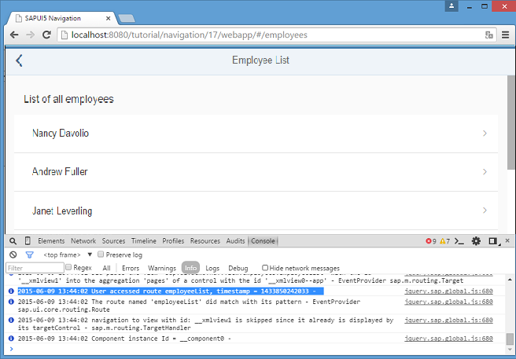

You can view and download all files in the Samples in the Demo Kit at Routing and Navigation - Step 17.
sap.ui.define([
"sap/ui/demo/nav/controller/BaseController",
"sap/base/Log"
], function (BaseController, Log) {
"use strict";
return BaseController.extend("sap.ui.demo.nav.controller.App", {
onInit: function () {
// This is ONLY for being used within the tutorial.
// The default log level of the current running environment may be higher than INFO,
// in order to see the debug info in the console, the log level needs to be explicitly
// set to INFO here.
// But for application development, the log level doesn't need to be set again in the code.
Log.setLevel(Log.Level.INFO);
var oRouter = this.getRouter();
oRouter.attachBypassed(function (oEvent) {
var sHash = oEvent.getParameter("hash");
// do something here, i.e. send logging data to the back end for analysis
// telling what resource the user tried to access...
Log.info("Sorry, but the hash '" + sHash + "' is invalid.", "The resource was not found.");
});
oRouter.attachRouteMatched(function (oEvent){
var sRouteName = oEvent.getParameter("name");
// do something, i.e. send usage statistics to back end
// in order to improve our app and the user experience (Build-Measure-Learn cycle)
Log.info("User accessed route " + sRouteName + ", timestamp = " + Date.now());
});
}
});
});We extend the App controller again and listen to the
routeMatched event. The routeMatched event is
thrown for any route that matches to our route configuration in the descriptor file.
In the event handler, we determine the name of the matched route from the event
parameters and log it together with a time stamp. In an actual app, the information
could be sent to a back-end system or an analytics server to find out more about the
usage of your app.
Now you can access, for example, webapp/index.html#/employees while
you have the console of the browser open. As you can see, there is a message logged
for each navigation step that you do within the app.